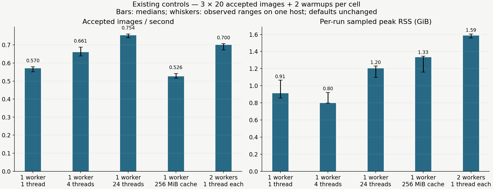
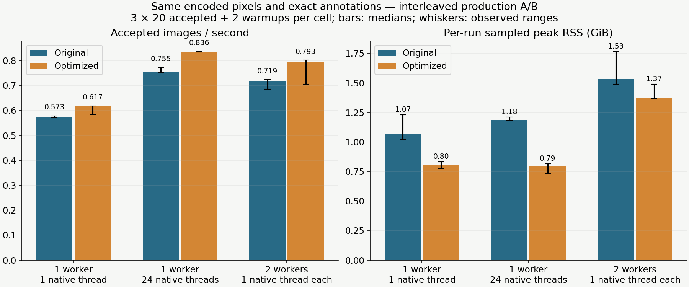
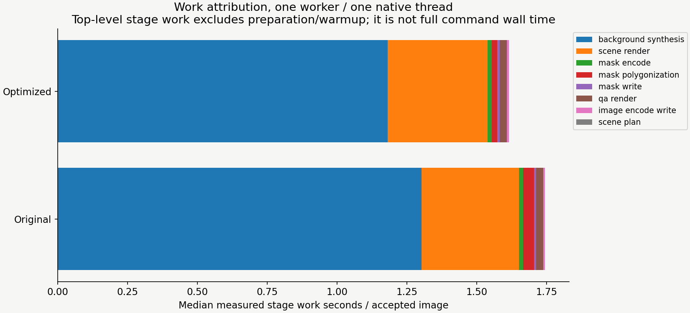
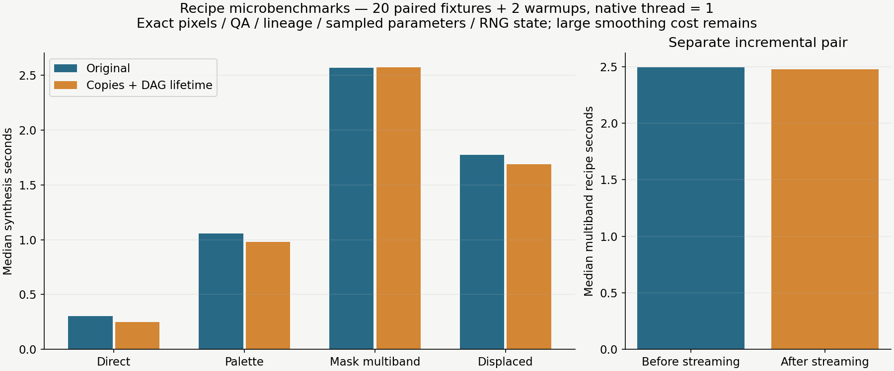
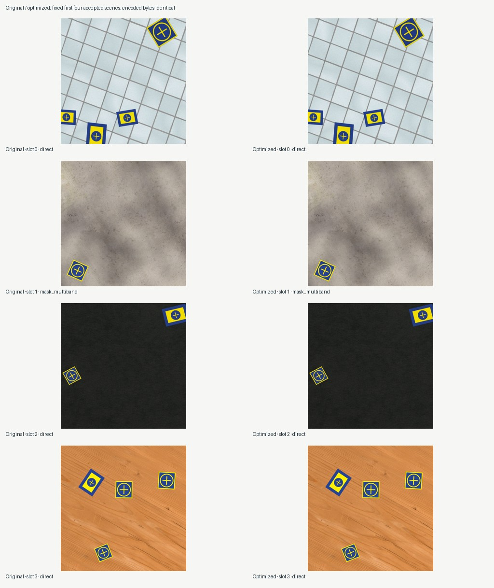

One host; unchanged defaults. This study measures computational cost and exact equivalence in the recorded software environment. It supplies no real-model accuracy or photographic-realism result.
Production: landing pads, realistic-heavy appearance, standard background mixture, 1280² output on a 2560² canvas. Each cell has 2 warmups and 20 measured accepted images; 3 rotating-order repetitions reuse deterministic content. Generation throughput excludes preparation and warmup. Full command time includes them. Range bars are observed minimum/maximum, not confidence intervals.
Read-only float32 consumers avoid redundant array copies. Background DAG values are released after their final use, including asset-constraint references. Multiband blending streams the same per-level arithmetic into reconstruction. Identical full/visible masks reuse one polygon projection. Generation semantics, RNG progression and defaults stay unchanged; cost observations use a new implementation identity.
| Case | Accepted/s: median (range) | Max sampled RSS GiB | Median full command seconds |
|---|---|---|---|
| threads-one | 0.570 (0.552–0.580) | 1.07 | 43.8 |
| threads-four | 0.661 (0.639–0.688) | 0.92 | 38.1 |
| threads-default | 0.754 (0.739–0.761) | 1.23 | 33.6 |
| cache-256 | 0.526 (0.517–0.542) | 1.35 | 46.7 |
| workers-two | 0.700 (0.673–0.707) | 1.61 | 36.8 |

| Case | Accepted/s: median (range) | Max sampled RSS GiB | Median full command seconds |
|---|---|---|---|
| baseline:one-worker-one-thread | 0.573 (0.570–0.578) | 1.23 | 43.3 |
| current:one-worker-one-thread | 0.617 (0.584–0.618) | 0.83 | 40.2 |
| baseline:one-worker-24-threads | 0.755 (0.751–0.772) | 1.21 | 33.6 |
| current:one-worker-24-threads | 0.836 (0.834–0.836) | 0.81 | 30.3 |
| baseline:two-workers-one-thread | 0.719 (0.685–0.723) | 1.77 | 36.0 |
| current:two-workers-one-thread | 0.793 (0.705–0.801) | 1.49 | 32.6 |



Copies and value lifetime help direct/palette/displaced work; multiband streaming chiefly reduces workspace. Large Gaussian smoothing remains dominant. Changing smoothing resolution, precision, kernel approximation or recipe mixture would change fidelity or distribution and requires a new planning decision.
Separate 1024² float32 kernel probe: 109.16→62.03 MiB peak traced temporaries (43.2% lower). Inputs were allocated before tracing. This includes all kernel changes since the original baseline and is not process RSS.

Compact measurements, per-repeat stage/resource evidence, source hashes and software versions
Memory availability and swap activity are retained per cell. Existing swap use does not establish a cause for timing differences. Resource planning estimates are advisory and can underpredict observed RSS. Larger queues had unstable results in a 5-image screen and were not promoted. Two-worker runs measure summed worker work alongside coordinator wall time; do not equate them.